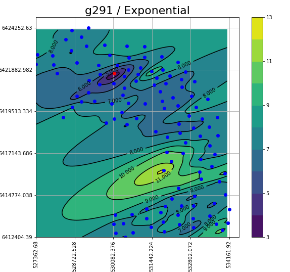

Результат — карта зон сходства с целевой скважиной

Красная точка — целевая скважина, относительно которой ищем похожие зоны.
Чем меньше значение метрики на шкале, тем больше сходство с целевой скважиной.